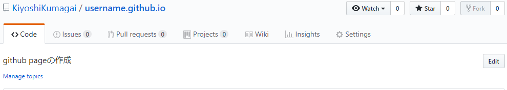
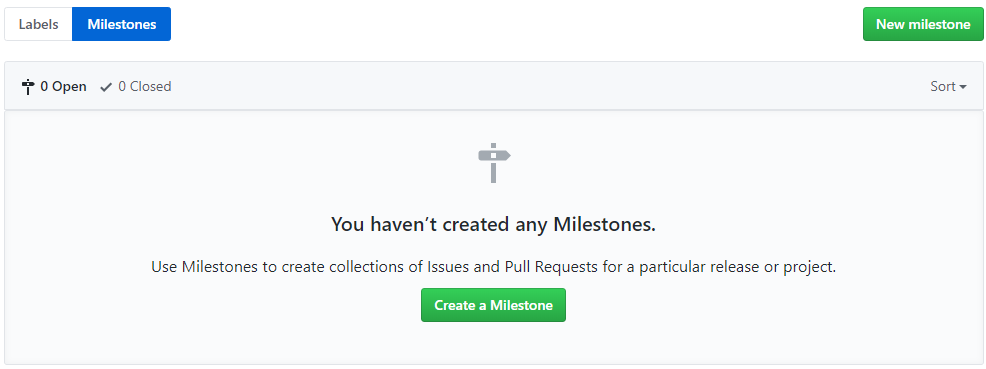
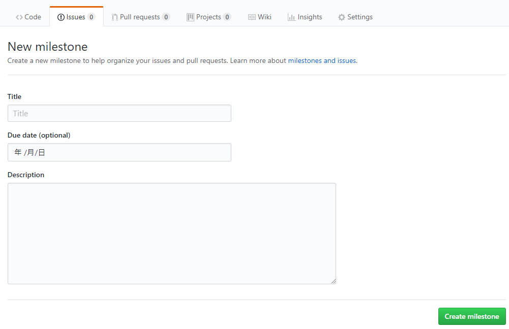

こちらもプロジェクト管理には必須の、Issueに締め切りをつけるMilestone（マイルストン）機能です。GitHubでは、Issueごとに期日を切るのではなく、マイルストンを先に置いて、それにIssueを紐付けます。詳しく見ていきましょう。
まずはIssueの一覧画面からマイルストンの一覧画面に遷移します。
そこから[New milestone]で新しいマイルストンを作成します。
マイルストンの設定画面ではタイトル、概要、期日を入力します。タイトルの付け方はチームごとに分かりやすいように定めると良いですね。[Create milestone]をクリックすると作成完了です。
